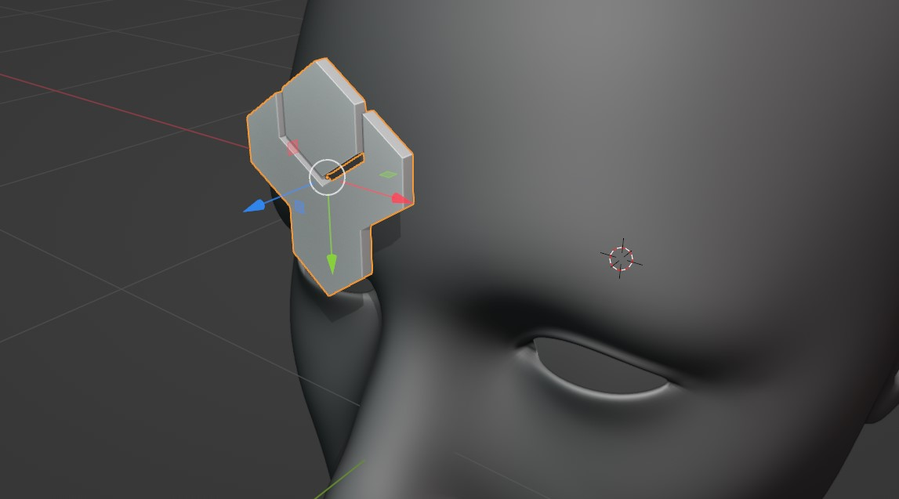

Select the Source Object, then the Target Object. Right-click and select “Conform Object” from the menu. Disable the Gradient Effect from the Options panel if needed. Further step by step guide below.
The Source Object is ideally rotated on its local axis so that its base is pointing towards the Target Object.
To conform a Source Object to a Target Object:
Move and rotate the Source Object near, or on top of, the surface of the Target Object you wish to wrap it to:

Here, the Source Object has been rotated 90 degrees and is pointing towards the Target Object’s forehead.
Warning
Ideally, Source Objects should:
Have a good level of topology so that they can be deformed (good number of vertices and quad faces)
Not have modifiers such as booleans which are dependent on other objects.
Not have parents/children.
Be rotated so that their local -Z axis is aimed towards the Target Object surface. Use the Toggle Surface Snapping feature to align your Source Object like this.
Tip
You can automatically rotate the Source Object so that is pointing towards the Target Object’s’ surface using the Toggle Surface Snapping option.
Select both the Source Object and then the Target Object:
Both objects selected, with the Target Object being the active object (the last object selected)
To do this:
First, click the Source Object to select it if it isn’t already.
Then, hold the Shift key, and then click the Target Object to select it last. This will make the Target Object the active object.
Both objects need to be selected this way for Conform Object to work.
Right-click in the viewport, and select the Conform Object menu. Select Conform Object:
The Source Object will then conform to the Target Object. If the Gradient Effect is turned on, you may wish to untick it in the Options menu that appears in the bottom left of the viewport: